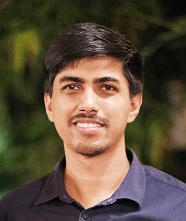

|
 |
Debanga Raj NeogAssistant ProfessorMehta Family School of Data Science and Artificial Intelligence Indian Institute of Technology Guwahati Ph.D., University of British Columbia, Vancouver, Canada B.Tech, Indian Institute of Technology Guwahati, India Ph.: +91 75788 13277 (mobile), +91-361-258-3504 (office) Email: dneog[AT*]iitg.ac.in |
Latest News
Bio
Dr. Debanga Raj Neog received his Ph.D. in Computer Science from The University of British Columbia (UBC), Vancouver, Canada in 2018, co-advised by Prof. Dinesh K. Pai and Prof. Robert J. Woodham. Before that, he completed his B.Tech in Electronics and Communication Engineering from the Indian Institute of Technology Guwahati (IITG). His interdisciplinary research work has covered the areas of computer vision, computer graphics, neuroscience, machine learning, and augmented reality. He is a recipient of the Mitacs Globalink Research Award under which he worked with the researchers in INRIA Grenoble Rhone-Alpes, France. He also has collaboration with Iwahori Lab in Japan. Dr. Neog co-founded Nytilus Inc., a Toronto-based startup focusing on computational imaging solutions to solve problems in industrial inspections, supported by global accelerators, such as Techstars. Dr. Neog joined IIT Guwahati as an Assistant Professor in Mehta Family School of DS & AI in September 2021.Teaching
2022: DA526 (Image Processing with Machine Learning).Current Responsibilities
Research Areas
Awards/Honors
Academic Grants
Industrial Funding/Grants
Publications
[Google Scholar] [ResearchGate]Current Students
ML Blogs
Click here to visit.Personal